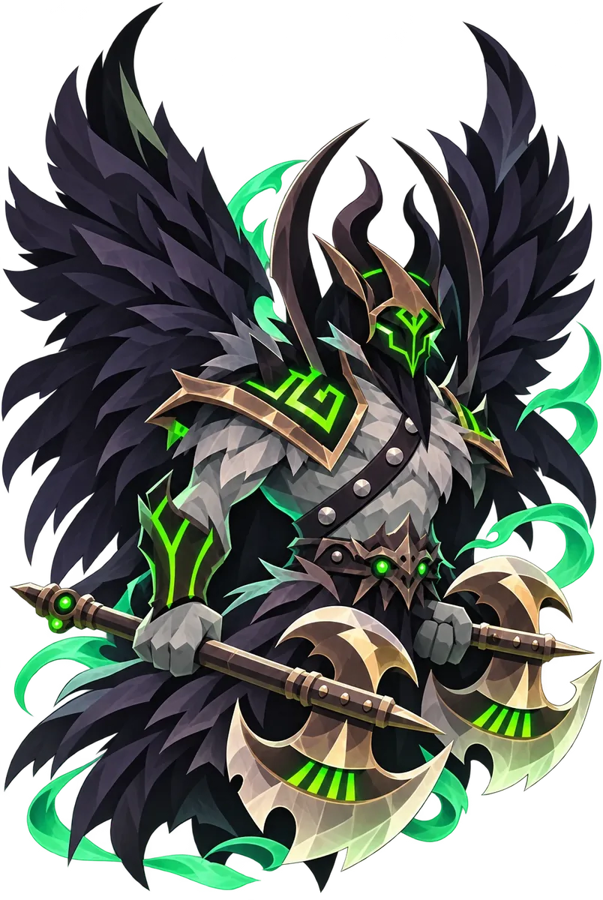
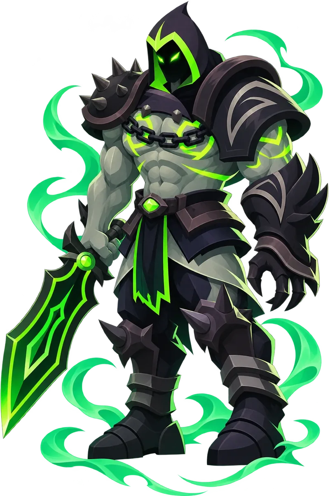
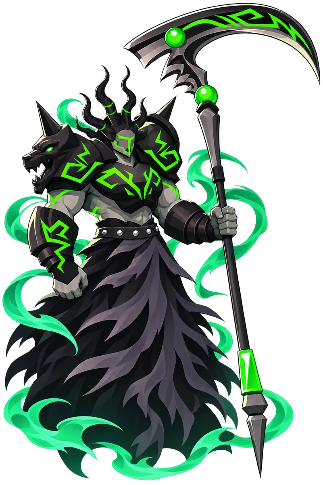
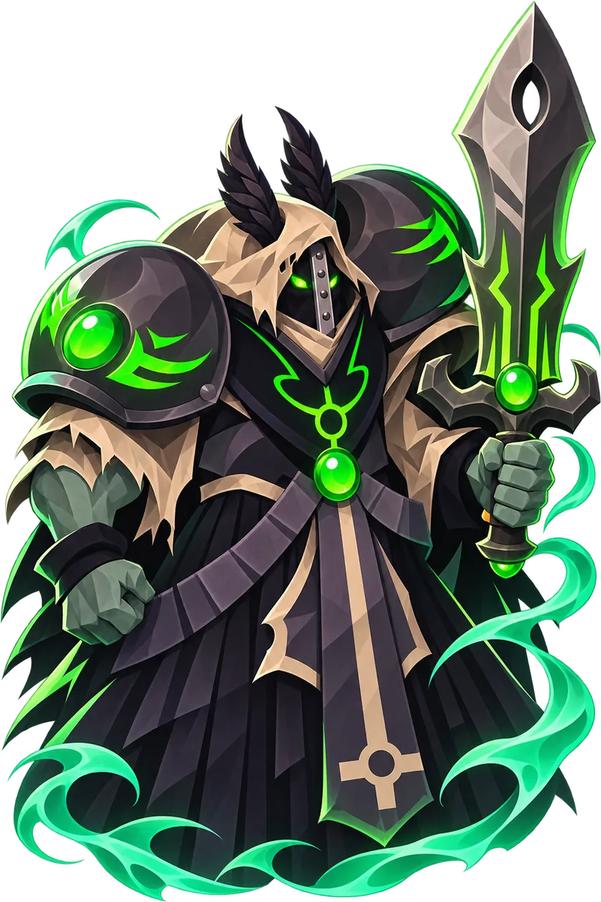
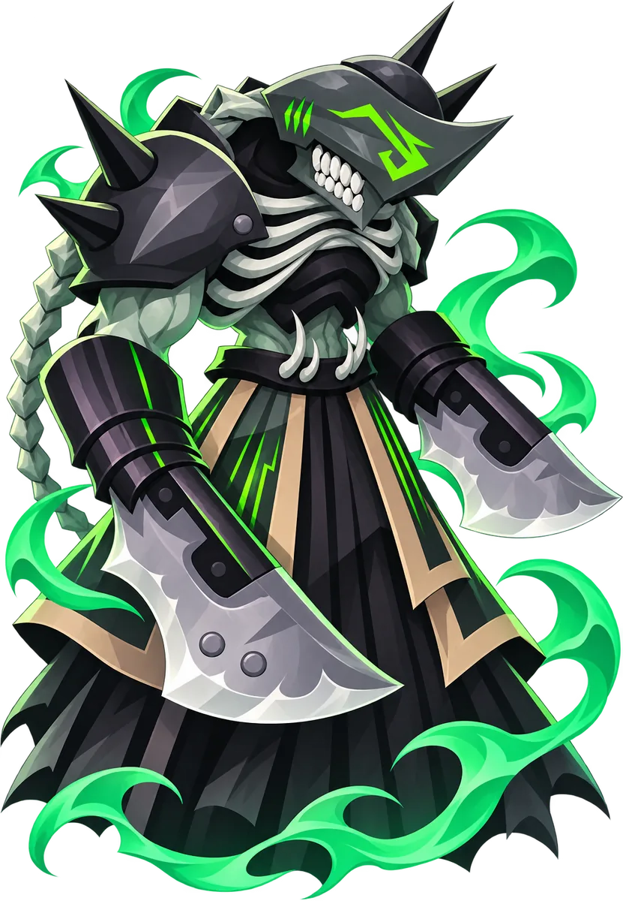

Empires Reborn · Cómo usar el portal
Todo lo que necesitas saber para usar el portal de Necros.

El guardián del hachaSoy uno de los guardianes de esta cripta. Con mis compañeros te vamos a explicar cómo funciona todo.
Esta web es del gremio: todo lo que registres (mezclas, notas, votos) lo ven los demás miembros y ayuda a que todos juguemos mejor. Solo necesitas guardar un link: el de la página de Inicio, donde está el menú.

El encapuchadoAl entrar te aparece una ventana para iniciar sesión. Pide dos cosas:
Con eso, todo lo que registres queda firmado con tu nombre. Si solo quieres consultar, toca Solo mirar.

El segadorAquí están todas las unidades, agrupadas por colección. Cada carta muestra:
Arriba tienes el buscador (por nombre o por habilidad, por ejemplo “congela” o “cura”) y filtros por colección, tipo, clase, habilidad, solo voladoras y rango de poder.
Pasa el mouse por una unidad (o tócala en el celular) y la verás caminar y atacar, como en el juego.

El cruzadoCada carta tiene el botón 📝 Nota · ★ Rareza. Al abrirlo puedes hacer dos cosas:
La rareza es de Reborn y no viene en los datos del juego, así que la completamos entre todos. Si tienes la unidad, mira sus estrellas y vota:
| Estrellas | Rareza |
|---|---|
| ★ | Normal |
| ★★ | Especial |
| ★★★ | Rara |
| ★★★★ | Épica |
| ★★★★★ | Legendaria |
Para todo lo que sirva al gremio: cambios que trajo Reborn (ataque, vida…), consejos, para qué sirve, cómo conseguirla.

El carniceroAsí funciona según la explicación oficial del juego:
Mientras tanto, lo básico para usar el portal:
Eso es todo, nigromante. ¡Ahora ve y haz crecer a Necros!